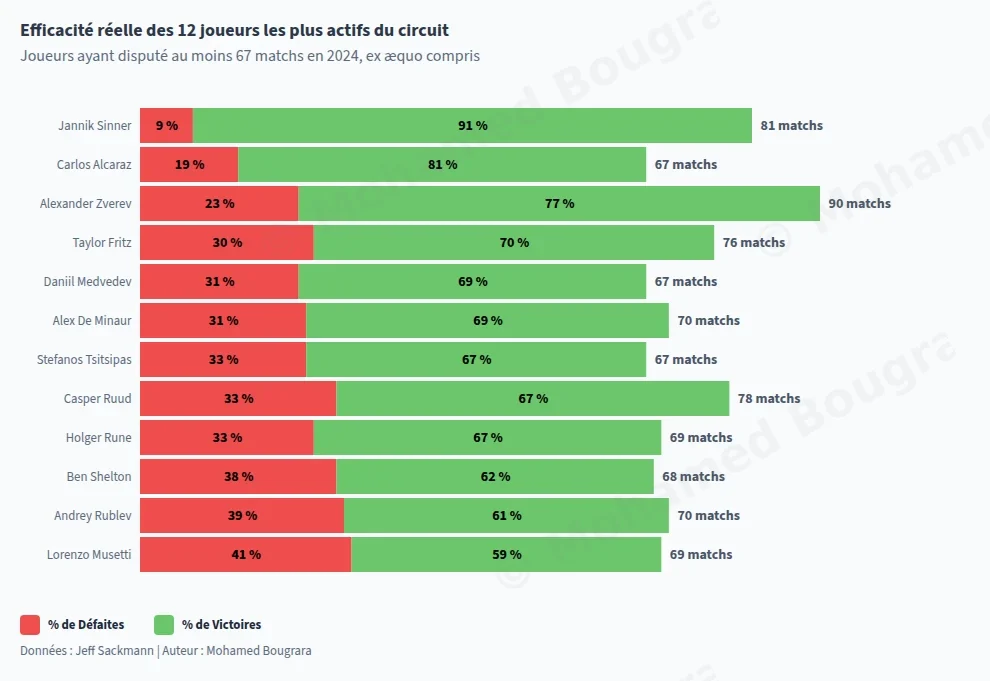
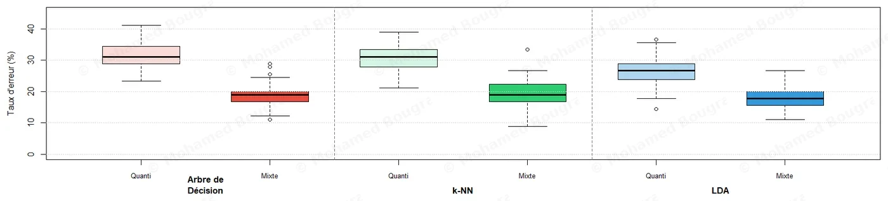

Projets
Application Streamlit : ACV
J’ai développé de bout en bout une application web pour l’Analyse du Cycle de Vie (l’impact environnemental d’un produit).
Les chercheurs y déposent leurs résultats et obtiennent des graphiques interactifs, au lieu de reprendre un tableur à chaque hypothèse :
- comparaison de scénarios (petite, moyenne ou grande batterie) ;
- normalisation sur une échelle commune ;
- filtres par indicateur.
« Il a veillé à ce que ce que nous avions en tête soit réalisable. […] Nous avons pu valider le tableau de bord dès les premiers tests. »
Le reporting financier mensuel, passé d’Excel à Power BI
Le reporting financier mensuel était compilé à la main sous Excel. Je l’ai remplacé par trois tableaux de bord Power BI branchés sur l’entrepôt de données.
Ils interrogent ses 20 tables en SQL, puis s’appuient sur un modèle en étoile (les chiffres au centre, reliés à leurs axes d’analyse) et sur des mesures DAX, les formules de calcul de Power BI.
Les gestionnaires y lisent désormais leurs chiffres en graphiques.
Ces tableaux de bord sont internes au CEA, et leurs données ne sont pas publiées : le schéma n’en montre aucune.
Rapport mensuel compilé à la main sous Excel
remplacé par
- Entrepôt de données20 tables, interrogées en SQL
- Modèle en étoileindicateurs calculés en DAX
- 3 tableaux de bord Power BIrafraîchis chaque jour à 5 h
- Lus par les gestionnaires
Le rapprochement mensuel des coûts, automatisé en VBA
Les gestionnaires financiers du CEA-LITEN rapprochaient à la main, sous Excel, les coûts de main-d’œuvre et les heures déclarées, pour imputer chaque heure au bon contrat de recherche.
J’ai relevé leur méthode auprès d’eux, puis je l’ai automatisée en VBA.
J’ai prototypé l’outil en stage, puis je l’ai construit et déployé en alternance. J’ai rédigé un guide pour les quinze gestionnaires, pour que l’outil tourne sans moi.
Cette macro est interne au CEA, et ses données ne sont pas publiées : le schéma n’en montre aucune.
Temps du rapprochement, chaque mois
- 4 départements
- 15 gestionnaires, avec un guide
Six ans d’accidents de la route, interrogés en SQL
J’ai chargé près de 2 millions de lignes officielles dans PostgreSQL et je les ai modélisées en étoile pour répondre à sept questions de sécurité routière.
- 67,5 % des tués hors agglomération, pour 36,1 % des accidents
- +14 % de tués en 2023 avec une jointure naïve, corrigé par
ROW_NUMBER() - 23 contrôles qualité, rejoués à chaque chargement
Voir une requête
Tués par an, variation sur un an et indice base 100 en 2019 : LAG() et FIRST_VALUE() sur une même fenêtre nommée.
SELECT
year,
killed,
round(100.0 * (killed - lag(killed) OVER w) / lag(killed) OVER w, 1) AS change_pct,
round(100.0 * killed / first_value(killed) OVER w, 1) AS index_2019
FROM yearly
WINDOW w AS (ORDER BY year)
ORDER BY year;Challenge National de DataViz 2024
Un challenge national de datavisualisation, sur des données climatiques de Météo-France. Notre équipe a conçu une datavisualisation (Tableau, R) et une vidéo qui explique nos analyses. Après une sélection à Grenoble face à toute notre promotion, nous avons remporté en finale le titre national.
Tableau de bord des panneaux de signalisation du campus UGA
Les 162 panneaux de signalisation du campus de l’Université Grenoble Alpes sont cartographiés un par un sous ArcGIS : la maintenance et le coût de chacun se lisent sur la carte, et filtrer la carte met à jour les indicateurs. Le tableau de bord est publié en ligne.
La saison ATP 2024 en graphiques
J’ai analysé en JavaScript les 3 076 matchs du circuit ATP 2024 : profil des joueurs, puis dynamique des matchs, filtrable par format. Les durées sont résumées par la médiane et les quartiles, qu’un match de cinq heures ne fausse pas. Une donnée manquante, comme les durées de Roland-Garros, est signalée.
Voir le code
Durée des matchs par surface et par classe d’écart de classement : d3.group regroupe les matchs, d3.quantile en tire les quartiles et la médiane.
var diff = Math.abs(d.winner_rank - d.loser_rank);
// Categorie d'ecart
var cat = 4;
if (diff <= 20) cat = 0;
else if (diff <= 50) cat = 1;
else if (diff <= 100) cat = 2;
else if (diff <= 250) cat = 3;
// Statistiques agregees : quartiles par surface et par tranche
d3.group(brut, function (d) { return d.surface; }, function (d) { return d.cat_id; })
.forEach(function (parCat, surface) {
parCat.forEach(function (valeurs, cat) {
var mins = valeurs.map(function (d) { return d.minutes; })
.sort(function (a, b) { return a - b; });
if (mins.length >= 3) {
stats.push({ surface: surface, cat_id: cat,
q1: d3.quantile(mins, 0.25), median: d3.quantile(mins, 0.5),
q3: d3.quantile(mins, 0.75), count: mins.length });
}
});
});
Ouvrir les graphiquesChallenge data de Prague, en équipe et en anglais
Une semaine de business intelligence sous Power BI, entièrement en anglais, à la faculté d’informatique et de statistiques de l’Université d’Économie de Prague : le BIP Data Analytics Fundamentals, programme intensif Erasmus+. Il s’est clos par un challenge data, que notre équipe a gagné.
 Le post LinkedIn de ma professeure d’anglais à Prague
Le post LinkedIn de ma professeure d’anglais à Prague
L’eau potable dans le monde, pays par pays
En 2015, l’ONU a promis l’eau potable chez soi à tous pour 2030. J’ai préparé en Python (pandas) les estimations OMS/UNICEF de 235 pays et territoires, puis mesuré où en est le monde dans un rapport Power BI de 8 pages (113 mesures DAX) et une carte interactive.
Part de la population mondiale qui a l’eau potable chez elle
- 2,14 milliards de personnes sans eau potable chez elles
- × 6,3 la vitesse de progrès qu’il faudrait pour tenir 2030
- Après 2100 en Afrique subsaharienne, à son rythme
Dépister la cirrhose du foie sans biopsie
La cirrhose se diagnostique normalement par biopsie du foie, un prélèvement invasif. Peut-on la repérer à partir d’une simple prise de sang ? Projet commandé par le laboratoire TIMC (CNRS / UGA).
- Avant tout calcul, vérifier que les groupes de patients sont comparables
- Résumer la prise de sang en 3 indicateurs qui gardent 80 % de la variance (ACP)
- Regrouper automatiquement les patients semblables : deux méthodes comparées
- Ce qui compte : enzymes du foie et plaquettes. Le sexe, lui, ne change rien
Suivi de la performance des joueurs : Grenoble Foot 38
Club de Ligue 2, la deuxième division française. Dans un projet de business intelligence sous Tableau et R, j’ai contribué au suivi de la performance physique des joueurs à l’entraînement, en lien direct avec l’entraîneur adjoint.
- Rédiger le cahier des charges fonctionnel et technique, d’après les besoins du staff
- Produire des rapports d’analyse quotidiens pour le staff technique
- Concevoir des outils de suivi de la performance et de la charge, séance par séance
Données du club confidentielles.
Prédire une maladie cardiaque à partir d’un bilan de routine
Un bilan de routine mesure la tension, le cholestérol, l’âge. Ces chiffres seuls plafonnent à 74 % de bonnes prédictions. Que manque-t-il ?
- Ce que le patient décrit porte l’information que les mesures ne captent pas
- Une douleur qui apparaît à l’effort : 75 % de ces patients sont malades ; sans elle, la grande majorité est saine
- Ajouter ces symptômes au bilan porte l’exactitude à 83 %
Ce que je recommanderais : retenir le modèle qui laisse passer le moins de malades.
Sur trois méthodes comparées, j’en ai écarté une qui réussissait presque aussi souvent, mais renvoyait chez eux un malade sur trois. Celle que je garde en dépiste 78 sur 100, et n’alarme à tort que 12 patients sains sur 100 (sensibilité 78 %, spécificité 88 %).
En dépistage, l’erreur chère est le malade qu’on rate, pas l’examen inutile.
Limite assumée : 16,6 % d’erreur résiduelle. C’est une aide au dépistage, pas un diagnostic.

Prévoir le remplissage des hôtels d’Auvergne-Rhône-Alpes
Le taux d’occupation régional varie de 15 points entre son creux et son pic. Ouvrir trop d’étages, c’est payer du personnel pour des chambres vides : le modèle doit dire quoi attendre du mois suivant.
- Les extrêmes tombent en août (61,7 %) et en décembre (46,4 %)
- Après décomposition, le résidu ne garde ni tendance ni saisonnalité
- Trois méthodes de prévision mises en concurrence, celle qui se trompe le moins l’emporte : Holt-Winters, livrée avec sa marge d’incertitude

Sauver ses balles de break suffit-il pour gagner ?
On juge souvent un joueur à sa résistance sous pression. J’ai vérifié si ce réflexe tient sur les 3 076 matchs de la saison ATP 2024, entièrement en JavaScript : un bilan par joueur, puis la mesure du lien, pour les 87 joueurs qui ont disputé au moins 30 matchs avec statistiques.
- Le lien existe mais reste moyen : corrélation de 0,57 entre balles de break sauvées et taux de victoire.
- L’ensemble des points gagnés au service explique mieux la victoire : corrélation de 0,71.
- Carlos Alcaraz est 2e en victoires mais 29e en balles de break sauvées ; Ben Shelton fait l’inverse, 2e et 20e.
Voir le code
Chaque match compte pour ses deux joueurs (le vainqueur et le vaincu) : un bilan par joueur sur la saison, puis la corrélation de Pearson avec le taux de victoire.
// One season summary per player: matches, wins, break points, serve points
const players = new Map();
function add(name, won, bpSaved, bpFaced, servePts, servePtsWon) {
const p = players.get(name) ?? { matches: 0, wins: 0, bpSaved: 0, bpFaced: 0, servePts: 0, servePtsWon: 0 };
p.matches += 1; p.wins += won;
p.bpSaved += bpSaved; p.bpFaced += bpFaced;
p.servePts += servePts; p.servePtsWon += servePtsWon;
players.set(name, p);
}
for (const m of matches) { // each match counts for both players
if (m.w_bpFaced !== '') add(m.winner_name, 1, +m.w_bpSaved, +m.w_bpFaced, +m.w_svpt, +m.w_1stWon + +m.w_2ndWon);
if (m.l_bpFaced !== '') add(m.loser_name, 0, +m.l_bpSaved, +m.l_bpFaced, +m.l_svpt, +m.l_1stWon + +m.l_2ndWon);
}
// Players with at least 30 matches with statistics
const season = [...players].filter(([, p]) => p.matches >= 30).map(([name, p]) => ({
name,
winRate: p.wins / p.matches,
bpSavedRate: p.bpSaved / p.bpFaced,
servePtsRate: p.servePtsWon / p.servePts,
}));
corr(season, 'bpSavedRate', 'winRate'); // 0.57
corr(season, 'servePtsRate', 'winRate'); // 0.71Travaux académiques
Un rapport de quatre pages qu’on parcourt comme un site
Ce rapport Power BI de quatre pages (effectifs, salaires, consommation électrique) se parcourt comme un site : flèche de retour, bouton d’accueil, onglets en bas.
Rien n’y est figé. Choisir « F » dans le filtre par sexe, en haut du rapport, recalcule d’un coup :
- la masse salariale par service ;
- le palmarès des cinq plus hauts salaires ;
- la répartition par pays ;
- l’ancienneté.
 Agrandir le rapport
Agrandir le rapport
Un site de statistiques sur le championnat espagnol
J’ai construit un mini-site pour comparer les joueurs et les équipes de la Liga, de la base à l’écran. Les données vivent dans une base MySQL : aucun chiffre affiché n’est écrit dans la page, chacun est le résultat d’une requête.
Certaines requêtes ne sont pas triviales. Le meilleur passeur de chaque équipe demande un maximum par groupe ; la position la plus représentée, un comptage groupé.
Deux mécanismes que j’ai tenu à construire :
- une recherche qui propose les noms dès la première lettre, parce qu’une liste déroulante de plusieurs centaines de joueurs ne se parcourt pas ;
- un espace d’avis où le visiteur note une équipe, commente, et peut supprimer son propre avis ; la moyenne des notes remonte ensuite sur la fiche de l’équipe.
Requête clé : le meilleur passeur de chaque équipe
Trouver le maximum d’un groupe et la ligne qui l’atteint est un piège classique en SQL : un simple GROUP BY donne le bon maximum, mais un nom pris au hasard dans l’équipe. La requête calcule d’abord le maximum de chaque équipe, puis y joint les joueurs : seul celui qui l’atteint reste, et deux joueurs à égalité apparaissent tous les deux.
SELECT p.TEAM, p.NAME, p.`COMPLETED PASS` AS MaxPasses
FROM merged_player_data p
JOIN (SELECT TEAM, MAX(`COMPLETED PASS`) AS m
FROM merged_player_data
GROUP BY TEAM) b
ON b.TEAM = p.TEAM AND b.m = p.`COMPLETED PASS`
ORDER BY MaxPasses DESC

Trois classifieurs départagés sur 500 tirages
Sur le jeu de données Iris (150 fleurs décrites par quatre mesures), trois méthodes sont comparées : k-NN, analyse discriminante et arbres CART, rejoués 500 fois. La LDA l’emporte avec 2 % d’erreur médiane.
Web scraping & stats NBA
Les statistiques de la NBA sont collectées automatiquement, en interrogeant une API et en lisant les pages web, puis mises en forme avec Pandas. Un site statique en publie les classements.
Scraping classements JO 2024
Les classements officiels de Paris 2024 sont collectés, puis structurés par pays, discipline et médaille.
Concevoir l’entrepôt avant de le remplir
Un client voulait savoir si ses campagnes marketing servaient à quelque chose. Ses données dormaient dans cinq fichiers de formats différents, sur deux pays.
En binôme, nous les avons rassemblées dans un entrepôt qui répond à ses cinq questions. J’en ai conçu la structure, que j’ai revue une fois après le retour de l’encadrant.
Ce qu’un club de foot a le droit de publier
Un club amateur publie la composition de son équipe chaque saison. A-t-il le droit ? Qui répond de ces données, et combien de temps peut-il les garder ?
J’ai répondu au regard du RGPD, et rempli le registre que la CNIL impose de tenir.
Base de données : fitness
La base de données d’une entreprise de fitness, conçue avant d’être remplie :
- modéliser : le modèle conceptuel (MCD), puis le modèle logique (MLD) ;
- structurer : une même information n’y est jamais écrite deux fois ;
- interroger : les requêtes SQL, sous MySQL et sous Access.
Stats rugby : le XV de France sur 152 ans
2 745 matchs internationaux (1871-2023) traités sous Excel, sans une ligne de code, pour situer la France face aux neuf autres grandes nations :
- nettoyer : deux formats de date ramenés à l’année ;
- créer des variables : résultat de chaque match, participation de chaque équipe ;
- analyser en univarié, puis en bivarié (lieu du match, Coupe du monde), avec NB.SI et SOMME.SI.
Résultat : 62 % de victoires à domicile, 39 % à l’extérieur. Limite : la France ne joue qu’à partir de 1906, ce qui fausse un classement brut.